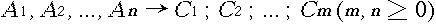

Machine: UNIX/PC Environment: UNIX/MS-DOS Language: Prolog Source Code: 60 KB Documents: User's Manual (English/Japanese)

Where an antecedent is a conjunction of A1, A2, ..., An ; a consequent is a disjunction of C1, C2, ..., Cm. When n = 0, it gives the initial model(a set of facts). When m= 0, it represents a condition of contradiction. In MGTP, proving starts with the initial model and proceeds from the antecedent to the consequence in a forward reasoning manner. When m ＞ 1, a case-splitting is examined.
The range-restrictedness condition is imposed on the problem clauses of MGTP/G . A clause is said to be range-restricted if every variable in the clause has at least one occurrence in its antecedent. When range-restricedness is satisfied, it is sufficient to consider one-way unification, instead of full unificarion with an occurs check, because all atoms appearing in the proof are ground. Efficient implementation is made possible by the groundness.
MGTP/G has is capable of dealing with most AI applications in spite of its range- restrictedness. It is easy to implement useful frame work in MGTP/G, such as negation as failure, hypothesis reasoning and modal reasoning by representing features in clauses.